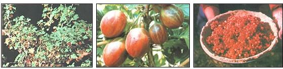

A few years back, on an early autumn day, I met an elderly gentleman coming down the Mono Pass Trail - in Yosemite's High Sierra - carrying a creel full of trout . . . a bag stuffed with wild mushrooms . . . and best of all, at least a kettle's worth of freshly picked mountain gooseberries. When I asked him what he intended to make with the fruit, he answered, "Pie" ... and I knew I'd found someone who shared my lasting fondness for one of humankind's better inventions.
Gooseberry pie! No other dish - not even such rare treats as that old trail-goer's mushrooms and trout - can equal a deep-dish, double-crusted gee-berry delight when it comes to setting my mouth to watering and my taste buds to anticipating. Actually, though, there are dozens of delectable ways to serve the plump fruits . . . and anybody - and that definitely means you - can find this forager's treasure, since the berries grow almost everywhere in the United States (as well as in most of the rest of the Northern Hemisphere).
In fact, there are more than 80 different species of gooseberries and currants (their equally palatable cousins) to be found on this continent. Of course, you're most likely to locate a profusion of the treats above the Mason-Dixon line or in any hilly, mountainous, or coastal areas . . . in short, they thrive wherever the climate is relatively cool and the soil more or less moist, although some varieties do grow even in rocky, semi-arid regions.
Most gooseberry and currant bushes - they're classified as shrubs, actually - grow from two to five feet high. Some types, on the other hand (particularly the ones found at high elevations), creep close to the ground and along rocks . . . while the golden currant, which is distributed quite widely throughout the West and much of the East, hangs from trees of up to ten feet tall.
In any case, the foliage of all the plants within genus Ribes can be loosely described as maplelike: The leaves generally have scalloped edges . . . each frond has three to five distinctive lobes ranging from obviously pointed to more rounded protrusions . . . and all have veins that fan out from the stalk at their bases like fingers on a hand.
You really shouldn't have much trouble finding and identifying a bush that's either a gooseberry or a currant . . . since their basic family features are quite distinctive and set them apart from other broad botanic groups. I should point out, however, that distinguishing one berry from the other can be a different matter altogether.
Many people, for example, will tell you that currants are smooth round fruits, while gooseberries have prickles or spines. Well, that rule of thumb is true in most cases . . . but it's also broken by several species within each subgroup. Then again, lots of folks are under the impression that gooseberries are most often green, while currants are red or black . . . but the truth of the matter is that green fruit - of either type - is often simply underripe (some cooks use the immature berries in preserves for their extra tartness).
Actually, fully mature Ribes fruits vary widely - depending on their species - in both color (red, gold, black, orange, or pale yellowgreen) and taste (from very sour to almost sugar-sweet). Furthermore, all have more or less conspicuous vertical stripes, and - in the field - a withered flower tube hanging from the bottom of each little orb.
You can often tell the cousins apart, though, by the manner in which the flowers (they can be pink, salmon, gold, white, yellow, or dark red) and their resulting fruits grow on the plants: Currants generally occur in clusters of five or more on a fairly long stalk (the blooms may be bellshaped, or saucerlike, resembling small blackberry blossoms). Gooseberries, on the other hand, are usually in groups of two or three (and almost never more than five) on a relatively short stalk . . . and their flowers, which are trumpetlike with protruding stamens, remind one of miniature fuchsia blossoms.
You'll be able to locate other distinguishing characteristics by studying a Ribes shrub's branches: Gee-berry bushes are usually thorny to some degree - frequently to the chagrin of hikers and backpackers - whereas the stems of only a very few varieties of currants are spiked (although some do have soft hairs). Also, if the specimen you're examining exudes a skunklike odor (you'll sometimes have to break a twig or rub a leaf to release the smell), you're almost surely looking at a currant bush . . . although a plant that doesn't give off the aroma might belong to either group.
In any case, currants and gooseberries are pretty much interchangeable in recipes . . . and if you have a hankering to try them, now's the time to go a-gathering. The flowers of both types bloom during May and June, and set fruit - beginning in July - that ripens through August and September. Some varieties - such as Ribes montigenum, the pale red gooseberry native to California's Sierra mountains - hold their fruit for many months and yield sun-shriveled, raisinlike morsels of sweetness even in the dead of winter. In most parts of the country, though, early fall is the time to head for the hills and fields with your berrying buckets. If you wait too long, the fruit may become worm-infested, or simply rot.
So gather ye berries while ye may . . . then hurry on back to the kitchen (or campfire, as the case may be) for some great eating.
RECIPES!
Let's say that you've foraged yourself a fine batch of fruit . . . and that you've absolutely, positively identified the harvest as palatable gooseberries or currants . . . and that you've removed all the stems and dried flower tubes (any spikes on the orbs will cook down) . . . and - finally - that you've taken time to wash your find thoroughly.
Now, if you happen to be a hungry back-packer with only a few basic on-the-trail ingredients to use, you might want to try one of the next three treats.
APPLES MOUNT BANNER
Mash the ripe gooseberries or currants in a pan, add dried apple slices or bits, and stew the fruits together with sweetener to taste . . . plus a little water if necessary. You'll produce a tangy concoction that is far superior to plain old run-of-the-mill applesauce!
BERRY PANCAKES
Add 1/3 to 1/2 cup of fresh gooseberries or currants to any pancake batter (whether it's "scratch" or made from a mix). Cook the flapjacks slowly - turning each one once - on a hot, greased griddle . . . and serve them with butter and brown sugar, honey, or syrup.
BERRY SYRUP
Combine 1 cup of gooseberries or currants, 1/3 cup of honey, and about 1/4 cup of water. Crush the fruit with the back of a spoon to release the juice, and then boil the mixture for about 10 minutes or until the liquid has reached a syrupy consistency. (Gooseberries and currants are rich in pectin and generally need no additional thickener.) Serve the topping with pancakes, fritters, or muffins. (If you'd prefer a tarter, cranberrylike sauce, use less sweetener . . . and serve the condiment with poultry or other meat.)
When you're at home and have more time - and a kitchen's worth of ingredients and implements at your disposal - you may want to try some of these dishes.
DANISH-STYLE RED CABBAGE AND GOOSEBERRIES
Melt 3 tablespoons of butter or margarine in a heavy pan. Add 1 red cabbage, shredded fine, plus 1 teaspoon of salt and 1/4 teaspoon of ground cloves. Then stir in 1 cup of gooseberry syrup (see the foregoing recipe). Cover the pot and cook the mixture very slowly (over low heat) for about 3 hours, stirring it frequently and adding more syrup whenever the liquid simmers almost completely away (this will probably happen several times during the lengthy process). Bring this unusual dish to the table piping hot.
BERRY APPLE CRISP
Combine 1 cup of gooseberries or currants and 2 medium-sized apples, sliced, in a greased baking dish. Sprinkle the mixture with a smattering of cinnamon, and pour 1/4 cup of water over the entire concoction. Then, in a separate bowl, combine 1/2 cup of flour, 1/3 cup of dried milk, 1/4 cup of honey, and 1/4 cup of margarine . . . and distribute this crumbly blend evenly over the apples and berries. Bake the dessert at 350°F for about 45 minutes, or until the fruit is done and the crusty top is lightly browned.
And now, ladies and gentlemen, I proudly present the definitive Ribes pièce de résistance:
DOUBLE-CRUSTED GOOSEBERRY PIE
Filling: Combine 4 cups of fresh gooseberries, 1/2 to 2/3 cup of honey, and 4 tablespoons of whole wheat flour.
Crust: Mix together 1-1/2 cups of whole wheat flour, 1/2 teaspoon of salt, 1/4 cup of dried milk, and 1/2 cup of wheat germ. Then work 2/3 cup of margarine into the ingredients, add 1/4 cup of cold water, and form the well-blended pastry into a ball. Now, divide the sphere in two, and - on a floured towel or piece of waxed paper - roll half the dough into a circle. When that's done, invert a piepan over the rolled-out disk and - handling the pie shell as little as possible - turn the pastry into the dish.
Assembly: Pour the gooseberry filling into the crust-lined pan and dot it with 1 tablespoon of butter or margarine. Roll the other half of the dough out to match the first, and lift or turn the pastry over the fruit mixture. Then press the edges of the two crusts together, flute the circumference with a fork, make two or three slashes in the top, and sprinkle the surface with sugar or brush on a coating of beaten egg. Finally, bake the pie in a preheated 350°F oven for 30 to 45 minutes or until the fruit is cooked very soft and the filling bubbles.
EDITOR'S NOTE: Although nearly all species of gooseberries and currants can be consumed (a few are only tolerable-tasting, but most are downright delicious, especially when cooked), at least one member of the family is reportedly not edible: Ribes viscosissimum - which is sometimes known as sticky currant because of the tacky substance on its branches and on its sparse, soft-bristled, bluish black fruit - is said to cause violent vomiting shortly after ingestion. The somewhat straggly thornless plant is found primarily on east facing slopes of the Cascade Mountains from British Columbia through Washington and Oregon . . . in northwest and Sierran California and northern Arizona . . . and in Montana, western Wyoming, and northwest Colorado. Its flowers are greenish yellow or greenish white, and are sometimes markedly tinged with pink or purple.
As always, we strongly recommend that you absolutely identify the species of any wild food you forage before popping a piece into your mouth or trying even a small "test" tidbit. Your local USDA extension service, and/or the botany department of any college or university, can often help you label any given plant.
Also, an excellent aid in finding and naming many native comestibles is Feasting Free on Wild Edibles by Bradford Angier (Stackpole, $8.95). This book can be purchased from many good bookstores or - for its listed price plus 95 cents shipping and handling - from Mother's Bookshelf (restricted) , P. O. Box 70, Hendersonville, North Carolina 28791.
|
 PHOTOS BY J. CARROLL O'NEIL)
|
|
|